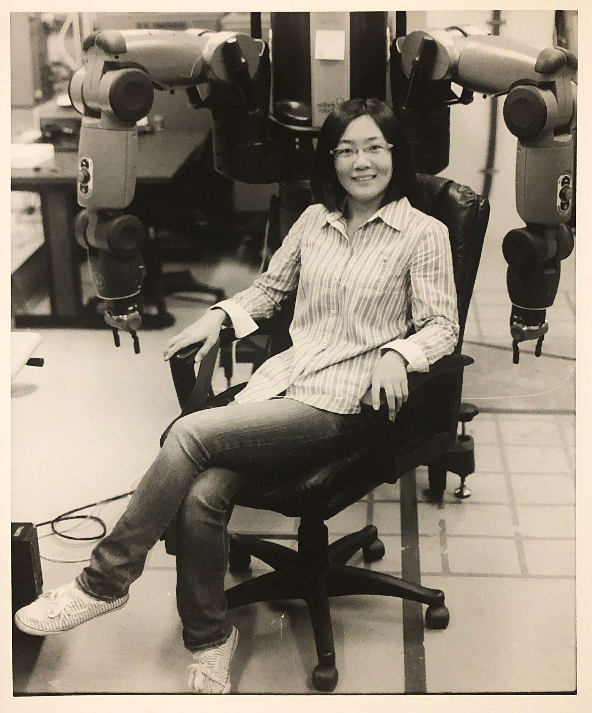

Home | Publications | Projects

Hi, my name is Sihui Li. I’m a Ph.D. candidate in computer science at Colorado School of Mines. I work with Dr. Dantam in the DyALab.
Email Address: li@mines.edu
Location: Brown Hall 340
My current research focuses on robot motion planning and task planning. I believe that one key to any robotics application is the algorithm running behind and driving all the hardware. Because of this, one of my goals is to develop robust, generally applicable, and theoretically complete algorithms for robots. In one area of my research, I look at motion planning infeasibility proofs that demonstrate the non-existence of configuration space paths. This also leads to a narrow passage motion planning algorithm that I’m currently working on. Applying these algorithms in context-sensitive scenarios shows advantages on robotic systems.
Sihui Li, Neil Dantam, “A sampling and learning framework to prove motion planning infeasibility”, The International Journal of Robotics Research, 2022 (Under Review).
Sihui Li, Neil Dantam, “Exponential Convergence of Infeasibility Proofs For Kinematic Motion Planning”, The Workshop on the Algorithmic Foundations of Robotics (WAFR), 2022.
Ryan Blake Jackson, Sihui Li, Santosh Balajee Banisetty, Sriram Siva, Hao Zhang, Neil Dantam, and Tom Williams. “An Integrated Approach to Context-Sensitive Moral Cognition in Robot Cognitive Architectures”, IROS 2021, in finalists for Best Paper Award on Cognitive Robotics.
Sihui Li, Neil T. Dantam.“Learning Proofs of Motion Planning Infeasibility”, RSS 2021.
Sihui Li, Neil T. Dantam, “Towards General Infeasibility Proofs in Motion Planning”, IROS 2020.
Sihui Li, Raagini Rameshwar, Ann Marie Votta, Cagdas Onal. “Intuitive Control of a Robotic Arm and Hand System with Pneumatic Haptic Feedback”, IEEE Robotics and Automation Letters with IROS 2019.
Sihui Li, Haowei Zhao, et al.“Learning Motion Primitives and Task Plan in Teleoperated Robot Motion through Multi-modal Interface”, workshop in Robotics: Science and Systems, June 2018, Pittsburgh, PA.
Please see these two project pages Motion Planning Infeasibility Proof and Context-Sensitive Planning.